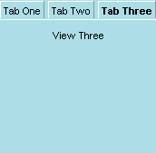

| Attributs | Enfants communs |
| align | <box> |
| class | <titledbutton> |
| id | |
| flex | |
| orient | |
| autostretch | |
| oncommand |
<tabpanel> contient les vues tabulées accessibles par les différents tabulateurs. Comme plusieurs des autres widgets tab, tabpanel hérite du cadre box, si bien que tous les attributs de disposition associés à ce widget peuvent être utilisés ici. L'exemple suivant montre <tabpanel> comme élément racine d'un widget tab de base:
Notez que dans l'exemple ci-dessus, les vues elles-mêmes sont construites sans bouton de titre. Vous pouvez également utiliser des cadres.

Last updated: 3/27/00 Ian
Oeschger
French version (7/6/00) Matthieu Camus